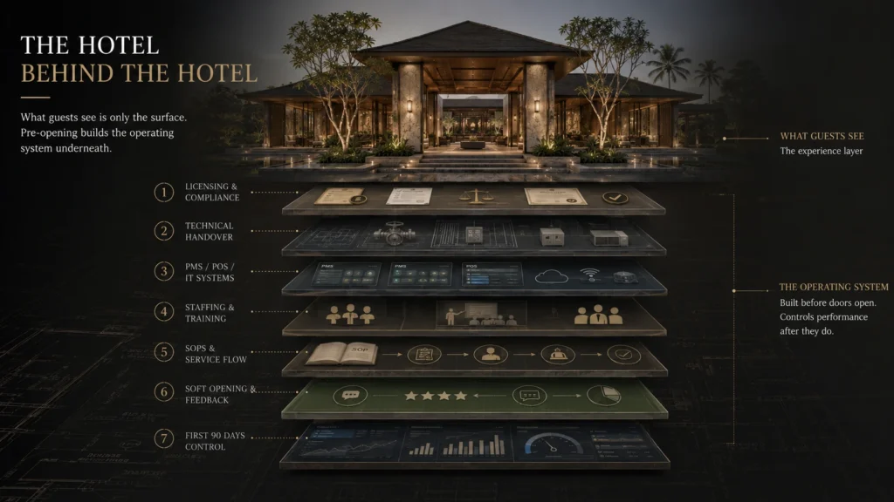
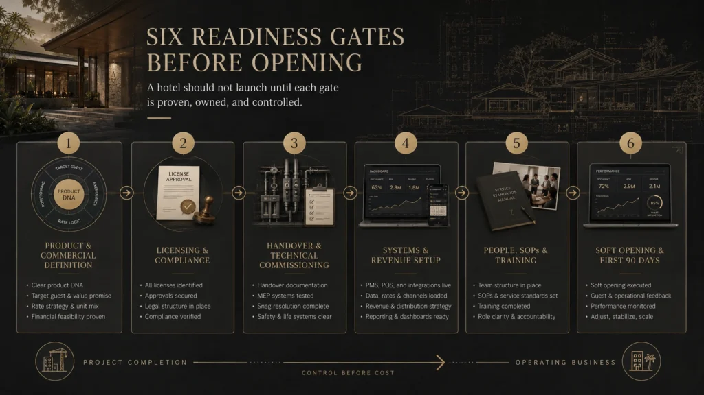
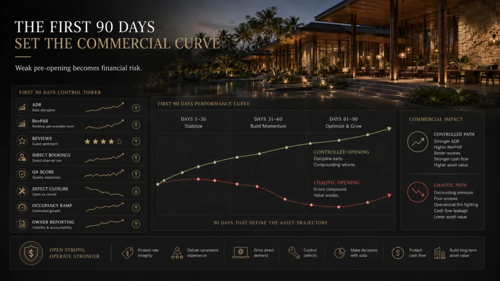

Most Bali hotel projects do not waste the pre-opening window because owners lack ambition. They waste it because they confuse a finished building with an operating hotel.
That mistake creates real commercial risk. Bali hotel pre-opening must turn the asset into a working business before guests arrive. The team must sequence licenses, test systems, train staff, rehearse SOPs, activate distribution, capture soft-opening feedback, and control the first 90 days.
The first paying guest should never become the hotel’s test run.
For owners, investors, developers, operators, asset managers, and family offices, Bali hotel pre-opening is not an administrative checklist. It is a commercial risk-control phase. Done properly, it protects reputation, ADR, team discipline, owner confidence, and long-term asset value.
Key Takeaways
- Construction completion does not equal operational readiness. A hotel opens on people, systems, standards, permits, service flow, and commercial control - not only on architecture.
- The real pre-opening window usually takes 6 - 12 months. Owners who wait until the final weeks create rushed hiring, weak training, licensing pressure, untested systems, and uncontrolled guest exposure.
- Bali’s compliance environment is tightening. Tourism authorities now focus more strongly on licensing, business standards, supervision, and unregistered accommodation.
- The first 90 days matter commercially. Early reviews, operational defects, service inconsistencies, and pricing uncertainty can shape the hotel’s market position long after opening.
- Owners need readiness gates, not only task lists. The real question is not “Is the building finished?” The real question is “Can the asset operate, sell, serve, report, and recover under real demand?”
Why Bali Hotel Pre-Opening Matters Now
Bali is no longer a market where owners can rely on location, design, and demand momentum alone. Demand exists, but competition, regulatory scrutiny, and guest expectations have become more serious.
According to BPS Bali’s March 2026 tourism overview, Bali recorded 472,070 in-person foreign tourist visits in March 2026. Star-rated hotel room occupancy reached 52.54%, compared with 46.61% in March 2025.
That demand signal matters. But demand alone does not make every new asset perform well.
The Indonesian Ministry of Tourism has also moved to strengthen Bali’s accommodation governance, with stronger attention to licensing, standardization, legal accommodation, and unregistered villas.
For owners, the message is clear: the market may be attractive, but it has become less forgiving. A project that opens before it is ready can damage its own revenue base from day one.
The Core Problem: Construction Complete Is Not Opening Ready
A completed building is only a physical asset. An operating hotel is a coordinated system.
Many Bali projects move through land acquisition, concept sketches, architecture, construction, and fit-out with significant energy. Then the project reaches the final phase, and the owner realizes that the actual hotel still does not exist operationally.
The rooms may exist, but the rooms division may not function yet.
The restaurant may look beautiful, but the team may still need menu engineering, supplier setup, POS configuration, food safety standards, and service choreography.
The spa may have the right design, but the operator may still need therapists, treatment protocols, pricing architecture, consent forms, retail logic, and guest-flow control.
The website may already be live, but the booking engine, rate codes, channel manager, payment gateway, OTA content, photography, and revenue rules may still need proper testing.
This is the pre-opening trap. The owner sees the building nearing completion and assumes opening is close. The operator sees an operating system that still needs assembly.
For a practical execution layer, Zenith’s hotel pre-opening management Bali checklist breaks the process into licensing, systems, staffing, SOPs, soft opening, and launch readiness.

What Most Owners Get Wrong
Most owners do not underestimate the importance of opening. They underestimate the number of decisions that must happen before opening.
| Owner Assumption | Operator Reality | Commercial Risk |
|---|---|---|
| “We can hire the team near opening.” | Leadership, culture, training, and cross-functional discipline take months to build. | Weak service, inconsistent guest handling, poor reviews. |
| “The contractor handover means the hotel is ready.” | MEP, safety, water, power, IT, kitchens, laundry, pools, and guest-room systems need commissioning under operating conditions. | Technical failures during guest stays. |
| “Licensing can be finalized at the end.” | Licensing, zoning, PBG/SLF, OSS-RBA, tourism standards, tax, BPJS, and other approvals need sequencing. | Opening delay, operational restriction, audit exposure. |
| “Soft opening means discounted rooms.” | Soft opening should work as a controlled operational test with occupancy limits, feedback loops, and readiness gates. | Guests experience defects before the hotel can absorb them. |
| “SOPs can be written after launch.” | Teams must train, rehearse, correct, and embed SOPs before the first high-pressure operating day. | Staff improvisation becomes the operating culture. |
| “Revenue will stabilize after opening.” | Early reviews, rate positioning, channel setup, and direct booking discipline shape the first commercial curve. | ADR suppression and slow reputation recovery. |
The problem is not that owners ignore pre-opening completely. Many owners do care. The problem is that they often treat it as a task list instead of a governed transition from project to business.
The Zenith View: Pre-Opening Is Operating-System Commissioning
Zenith’s operator-first view is simple: Bali hotel pre-opening is the commissioning of the hotel’s operating system.
During this phase, Product DNA becomes service behavior. The org chart becomes real accountability. The concept becomes scripts, standards, menus, treatments, rate logic, workflows, and recovery protocols.
Pre-opening also tests architecture against guest movement, staff movement, maintenance access, storage, noise, lighting, energy load, housekeeping flow, and commercial usability.
A generic checklist asks, “Has the task been completed?”
An operator-first pre-opening program asks better questions:
- Can the front office handle a complaint without escalating every issue to the owner?
- Can housekeeping turn rooms at the required standard and speed?
- Can F&B execute the menu under real guest timing, not tasting-session timing?
- Can the PMS, POS, payment gateway, channel manager, and accounting reports reconcile correctly?
- Can the team explain the hotel’s positioning in language that supports rate?
- Can the owner see weekly readiness status, risks, decisions, and blockers?
- Can the hotel open at controlled occupancy without burning the first review cycle?
- Can management protect ADR while still using soft-opening feedback intelligently?
This is what Zenith sees that design-led or generic pre-opening advice often misses. Opening is not the end of development. Opening is the first public test of whether the development became a business.
This is also why hotel Product DNA matters before launch. If the guest promise, positioning, spatial logic, service logic, and operating model lack clarity before opening, the team must invent the hotel while guests already pay.
The Six Readiness Gates Before Opening
A serious Bali hotel pre-opening program should use readiness gates. Each gate should have an owner, deadline, evidence, risk status, and pass/fail logic.
| Readiness Gate | What Must Be Proven | Owner-Side Question |
|---|---|---|
| 1. Product & Commercial Definition | Target guest, positioning, room types, service promise, F&B logic, wellness/spa logic, pricing architecture, channel strategy. | Does the hotel know exactly what it sells, to whom, and why it deserves its rate? |
| 2. Licensing & Compliance | OSS-RBA status, correct business classification, tourism standards, PBG/SLF pathway, tax, BPJS, and activity-specific permits where applicable. | Can the asset legally and operationally support the use it intends to sell? |
| 3. Handover & Technical Commissioning | Snag list, as-built drawings, warranties, O&M manuals, MEP tests, fire/life safety, IT, water, power, pools, kitchens, laundry, elevators where relevant. | Can the building operate under real guest conditions? |
| 4. Systems & Revenue Setup | PMS, POS, channel manager, booking engine, payment gateway, CRM, reporting, rate codes, taxes, menus, inventory, user permissions. | Can the hotel sell, book, charge, report, and reconcile accurately? |
| 5. People, SOPs & Training | Leadership hiring, department staffing, SOPs, service scripts, brand standards, emergency drills, mock operations, complaint recovery. | Can the team deliver the promise without improvising? |
| 6. Soft Opening & First 90 Days | Controlled occupancy, feedback capture, QA checks, review response, defect closure, retraining, pricing ramp, owner reporting. | Can the hotel scale demand without damaging reputation or rate? |
These gates are not theoretical. The owner and operator should review them through a weekly pre-opening meeting, a live risk register, and a master Gantt. That Gantt must integrate construction, licensing, HR, systems, procurement, marketing, training, and owner approvals.
For owners who need a more tactical SOP layer, Zenith’s pre-opening SOP checklist provides a useful operational reference.

Bali-Specific Compliance Is a Workstream, Not a Final Check
In Bali, compliance cannot sit in a file that someone checks near the opening date. The project team must build it into the pre-opening schedule from the beginning.
Tourism Minister Regulation No. 6 of 2025 covers tourism business standards, supervision procedures, and administrative sanctions in the risk-based licensing system for the tourism sector.
Separately, Government Regulation No. 16 of 2021 forms part of Indonesia’s building regulation framework connected to building implementation, including the broader PBG and SLF context.
This matters because hotel readiness has more than one layer. It is operational, legal, technical, and administrative.
For a Bali hospitality asset, the pre-opening compliance workstream should normally clarify:
- whether the land and zoning support the intended hospitality use;
- whether the business entity and activity classification match the actual operating model;
- whether OSS-RBA registration and business licensing align with the asset;
- whether PBG and SLF status support the building’s intended use;
- whether the team understands and assigns tourism business standards;
- whether tax registration, local obligations, BPJS, employment setup, and supplier compliance are ready;
- whether alcohol, entertainment, spa, wellness, medical, or event-related activities require additional controls.
This is not legal advice. The point is governance. Owners should not discover compliance gaps after rooms are already on sale.
Operational Implications
A hotel that opens without operational readiness usually shows the same symptoms:
- department heads start too late;
- SOPs exist as documents but not as behavior;
- staff training gets compressed into a few rushed sessions;
- PMS/POS setup remains incomplete or poorly tested;
- procurement becomes reactive;
- maintenance and engineering issues surface during guest stays;
- F&B and spa teams operate without enough rehearsed flow;
- owners intervene in daily operations because reporting is weak;
- the first reviews mention avoidable defects.
The solution is not only “more effort.” The solution is a structured pre-opening governance model.
What Should Be in the Operating Rhythm
| Governance Element | Practical Use |
|---|---|
| Master Pre-Opening Gantt | One integrated timeline across construction, licensing, systems, HR, procurement, marketing, training, and soft opening. |
| Risk Register | Weekly visibility on blockers, owner decisions, compliance gaps, vendor delays, staffing gaps, and technical defects. |
| Readiness Dashboard | Pass/fail status by department and workstream. |
| Decision Matrix | Clear owner/operator approval rights for budget, hiring, pricing, procurement, brand, and launch date. |
| Mock Operations | Test stays, timed check-ins, room turns, complaint scenarios, breakfast service, emergency response, payment flows. |
| Soft-Opening Plan | Controlled occupancy, invite groups, feedback tools, defect closure, daily debriefs, review protection. |
| First-90-Days Plan | Daily performance rhythm, QA checks, revenue meetings, review response, retraining, and escalation control. |
Without this rhythm, the project enters opening with optimism instead of control.
Commercial Implications
Pre-opening failure creates more than operational inconvenience. It affects the financial path of the asset.
A weak opening can damage:
- ADR: early quality issues can force discounting or delay confident rate growth;
- RevPAR: low readiness can affect both rate and occupancy ramp;
- review velocity: early guests can become public auditors;
- direct booking potential: weak content, weak reputation, and poor conversion logic can push demand back to OTAs;
- owner cash flow: opening delays, rework, emergency procurement, and staff inefficiency can create cost pressure;
- asset value: weak operating discipline makes a hotel harder to stabilize, value, finance, or reposition.
Owners often focus on CAPEX until handover. But the pre-opening phase determines whether CAPEX becomes a controlled income-producing asset or a beautiful building with unstable operations.
This is why a serious opening plan should connect to the investment logic, not sit separately from it. If the original hotel feasibility study assumed a certain ADR, occupancy ramp, payroll structure, outlet margin, or guest profile, the pre-opening phase must translate those assumptions into operating reality.
The Commercial Question Owners Should Ask
Do not ask only: “Can we open?”
Ask: “Can we open without damaging the rate, reputation, team, and operating platform we need for the first full year?”
That question changes the decision-making discipline.
What To Do Before Confirming an Opening Date
Before an owner publicly confirms an opening date, Zenith would check the following areas.
| Area | Minimum Owner-Side Check |
|---|---|
| Product DNA | Guest profile, service promise, room logic, F&B logic, wellness/spa logic, positioning, and rate support are clear. |
| Licensing | OSS-RBA, tourism licensing/standards, PBG/SLF pathway, tax, BPJS, and activity-specific permits are mapped and owned. |
| Construction Handover | Snag list, warranties, as-builts, O&M manuals, safety systems, and critical MEP testing are documented. |
| Systems | PMS, POS, channel manager, booking engine, payments, tax setup, reports, access rights, and test transactions are complete. |
| HR | Leadership team joins early enough; department teams are recruited, inducted, trained, and scheduled. |
| SOPs | Teams have rehearsed and corrected SOPs through mock operations. |
| Procurement | OS&E, FF&E, linen, uniforms, minibar, amenities, operating supplies, and critical spares are ready. |
| Commercial Setup | Rate plan, opening offers, OTA content, direct booking flow, photography, website, CRM, and review response plan are ready. |
| Soft Opening | Occupancy ramp, guest profile, feedback method, defect closure, and escalation rules are clear. |
| First 90 Days | Daily/weekly reporting, QA, revenue meetings, owner updates, and retraining rhythm are set. |
If the owner and operator cannot control these areas, the opening date is not a commercial decision. It is a gamble.
For Bali developers still shaping the project before pre-opening, Zenith’s article on Bali hotel feasibility study explains why feasibility should test product logic, operating model, licensing path, staffing reality, and commercial assumptions before the owner fully commits capital.
FAQ
How early should Bali hotel pre-opening start?
For most serious hotel, resort, boutique, villa, or wellness hospitality assets in Bali, pre-opening should start 6 - 12 months before launch. Larger, more complex, or regulated projects should start earlier. The owner should not wait until construction is nearly finished because licensing, leadership hiring, systems configuration, SOP development, recruitment, training, procurement, and soft-opening planning all depend on each other.
Is pre-opening only the operator’s responsibility?
No. The operator may lead the operating workstreams, but the owner still needs governance visibility. Licensing, CAPEX closure, contractor handover, owner approvals, bank accounts, employment structure, legal obligations, and budget decisions remain owner-side responsibilities. The best structure is a clear pre-opening office or steering rhythm where owner, operator, project manager, legal, finance, HR, and technical teams work from one integrated plan.
What is the biggest mistake Bali hotel owners make before opening?
The biggest mistake is confirming an opening date before the hotel passes readiness gates. Owners often focus on construction progress and visual completion while the operating system remains incomplete. This creates rushed hiring, weak training, untested systems, unresolved licensing, reactive procurement, and avoidable service failures in front of real guests.
Does a soft opening mean selling cheap rooms?
No. A soft opening should not operate as a discount campaign. It should work as a controlled operational test. The owner and operator should decide which rooms, outlets, facilities, and guest segments enter the soft opening. They should also define allowed occupancy, feedback capture, defect closure, and the point at which the hotel can scale. A badly managed soft opening can damage the asset before the official launch.
Can Zenith support only part of the pre-opening process?
Yes. Zenith can support a focused readiness audit, owner-side pre-opening governance, Product DNA translation, operating model review, SOP and service-flow logic, commercial readiness, soft-opening structure, or full pre-opening advisory. The right scope depends on project progress, locked decisions, and the owner’s biggest risk areas.

Summary Takeaways
- Bali hotel pre-opening is a strategic governance phase, not a final checklist.
- The most dangerous opening mistake is treating construction completion as operational readiness.
- Bali’s compliance environment makes early licensing and standards planning more important, not less.
- The first 90 days can shape review momentum, ADR confidence, and owner trust.
- Owners need readiness gates across product, licensing, handover, systems, staffing, SOPs, soft opening, and first-90-days stabilization.
- The first guest should not become the test run.
CTA
If you are developing, acquiring, or preparing to open a hotel, villa resort, boutique property, wellness retreat, or mixed-use hospitality asset in Bali, Zenith Hospitality Global can review your Bali hotel pre-opening readiness before the opening date becomes a commercial risk.
Speak with Zenith Hospitality Global before confirming your launch date. We help owners, investors, developers, and operators turn a finished project into a controlled operating business.
Start a conversation